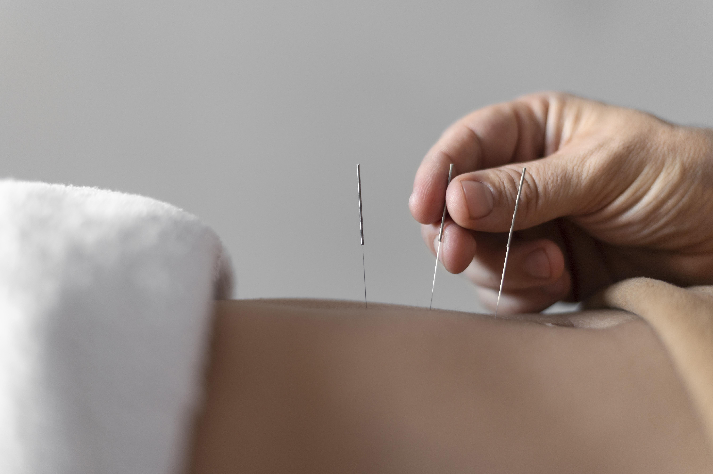

GMP인증받은 한약재만 사용!
부작용 걱정 없는 한방 신경정신의원


심리 클리닉
전문 의료진과 1:1 밀착 상담
-
부작용 없는 치료 No side effect
철저한 검증으로 위해요소는 미리 차단하는 GMP
인증을 받은 국내산 한약재만을 사용하여 안전합니다. -
1:1 케어 치료 One-on-one care
한의사와 한방 간호사가 팀을 이뤄 환자를 관리하는
시스템을 통해 환자의 개별관리합니다. -

심신 통합치료Mind-Body Therapy
정신 건강을 위해 몸의 건강을 저희 심온 +1도
운동법을 참고하세요.
-
Q. 왜 한방에서 신경정신과 진료를 하나요?
한의학에서 정신건강을 다룬 것은 오늘 내일 일이 아닙니다.
한의학에서는 사람의 몸과 마음을 하나의 유기체로 보는데
동의보감에서도 질병의 예방과 치료에 앞서 무엇보다도
마음의 치료가 가장 중요하다고 강조하고 있습니다.
이는 예로부터 있었던 우리 고유의 치료 방법이기에
한의원에서 신경정신과를 치료하는 것은 이상한 것이 아닙니다. -
Q. 심리상담이랑 같이 다녀도 되나요?
한방 정신심리 한의원에 내원하는 많은 환자분들이 양약으로
효과를 보지 못하였거나 심리치료를 따로 받는 분들입니다.
심온 +1도에서는
그러한 문제로 양학의료와 충돌나지 않게 합니다.
삼담소에서 심리상담을 진행하시며
심온 +1도에서 한방의료만 진행하는 것도 가능합니다.
많은 심리 상담소에서 심온 +1도를 추천하여
동시 진행하는 곳도 있으니 안심하시고 내원하시길 바랍니다.
-
Q. 한약과 침으로 정신과 진료 효과가 있나요?
과거에는 주로 양반이나 왕족들이 신경 정신과 치료를 많이 받았습니다. 많이 먹는데 몸은 안 쓰고 머리를 많이 써서 스트레스 받고... 현대인분들하고 똑같죠? 세종대왕님도 화병으로 고생하셨습니다. 외국에서도 연구가 많이 돼서 우울증 한방 치료 논문이 뉴스위크에 소개도 되었습니다.
 -
Q. 여성 전문 상담을 받고 싶은데 여성 한의사도 있나요?
네, 내원하시는 분들의 70%가 여성분들입니다.
환자의 심리적 안정을 돕기 위해
여성 질환을 전문으로 담당하는
여성 전문 한방 신경정신 한의사도 있습니다.
여성전문 한방 신경정신 한의사는
산후 우울증, 갱년기 우울증 등을 eka담하고 있습니다.
-
Q. 왜 한방에서 신경정신과 진료를 하나요?
-
Q. 심리상담이랑 같이 다녀도 되나요?
-
Q. 한약과 침으로 정신과 진료 효과가 있나요?
-
Q. 여성 전문 상담을 받고 싶은데 여성 한의사도 있나요?
찾아오시는 길
부산시 동래구 중앙대로 1335
TEL : 051 - 123 -4567
진료시간
월·화·금요일
오전 09:00 - 오후 06:30
수·토요일
오전 09:00 - 오후 01:00
일·공휴일은 휴진입니다.
수요일·토요일은 점심시간 없이 진료합니다.
목요일
오전 09:00 - 오후 09:00
점심시간
오후 01:00 - 02:00